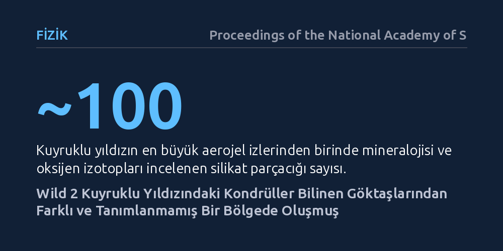

FIZIK · Proceedings of the National Academy of Sciences · 2026-10-19
Araştırmacılar, Wild 2 kuyruklu yıldızından getirilen aerojel izindeki yaklaşık 100 silikat mineral parçasının oksijen izotoplarını inceledi. Bulgular, bu kondrüllerin bilinen göktaşı sınıflarından hiçbirine uymayan, Güneş bulutsusunun daha önce tanımlanmamış ayrı bir bölgesinde oluştuğunu gösterdi.
Dünya'ya düşen göktaşları erken Güneş Sistemi'nin yalnızca bir kısmını temsil ediyor; gezegenlerin doğduğu gaz ve toz diski bildiğimizden çok daha zengin ve karmaşık bir malzeme çeşitliliğine sahipti.

Kuyruklu yıldızlar, Güneş Sistemi'nin en soğuk ve ırak köşelerinde, su buzu ve donmuş gazların tozla harmanlanmasıyla bir araya gelmiş dev kirli kartoplarıdır. Uzun yıllar boyunca bu gök cisimlerinin yalnızca Güneş'ten çok uzakta, dondurucu sıcaklıklarda yoğuşmuş ilkel maddeleri barındırdığı varsayılıyordu. Oysa NASA'nın Stardust uzay görevi 81P/Wild 2 kuyruklu yıldızından parçacıklar getirip laboratuvara sunduğunda, bilim dünyası beklenmedik bir tabloyla karşılaştı: Buzla kaplı bu yapının içinde, bin dereceyi aşan yüksek sıcaklıklarda eriyip katılaşmış silikat kristalleri ve kondrüller vardı.
Bu durum temel bir çelişkiyi doğurdu: Güneş'in yakınlarında oluşması gereken bu yüksek sıcaklık kayaçları, nasıl olup da Güneş Sistemi'nin en dışındaki dondurucu bir kuyruklu yıldıza gömülmüştü? Daha da önemlisi, bu tanecikler Dünya'ya düşen sıradan ya da karbonlu göktaşlarındaki bilindik malzemelerle aynı fırından mı çıkmıştı, yoksa bambaşka bir kökene mi sahipti? Bu sorunun cevabı, gezegenlerin doğduğu ilk diskin yapısını ve erken Güneş Sistemi'ndeki büyük madde göçünü anlamak açısından kritik önemdedir.
Kuyruklu yıldız tozlarını yakalamak son derece hassas bir mühendislik gerektirir; saniyede kilometrelerce hızla gelen minik bir parçacık sıradan bir yüzeye çarptığında anında buharlaşır. Stardust aracı bu engeli aşmak için neredeyse tamamen havadan oluşan son derece hafif ve gözenekli silikon süngerler, yani aerojeller kullandı. Kuyruklu yıldıza yaklaşan araç, çarpan tanecikleri bu jel tabakasının içinde yavaşlatıp hapsetti ve arkalarında havuç benzeri oyuklar bıraktı.
Araştırma ekibi, Wild 2'den getirilen bu aerojel bloklarındaki en büyük çarpma izlerinden birini hedef aldı ve jel içine saplanmış yaklaşık 100 mikroskobik silikat parçasını titizlikle ayırdı. Bilim insanları parçacıkların kristal yapılarını incelemekle kalmadı; ikincil iyon kütle spektrometrisi gibi ileri analitik yöntemlerle her bir parçadaki oksijen izotop oranlarını hassas bir şekilde ölçtü. Oksijen izotopları, Güneş bulutsusundaki farklı gaz ve toz havuzlarının ayırt edici parmak izi işlevini görür.
Laboratuvar analizleri çarpıcı bir gerçeği gün yüzüne çıkardı. İncelenen yaklaşık 100 silikat parçacığının mineralojisi ve oksijen izotop oranları, bugüne kadar yeryüzünde toplanmış göktaşlarının bilinen profilleriyle tam olarak örtüşmüyordu. Yeryüzündeki göktaşları ağırlıklı olarak asteroit kuşağından gelir ve içerdikleri kondrüller belirli izotopik havuzlara yerleşir. Ancak Wild 2 parçacıkları, bilinen karbonlu ya da sıradan kondritlerin çizdiği sınırların dışında kaldı.
Bu bulgu, kuyruklu yıldızdaki silikatların daha önce tanımlanmamış, bağımsız bir malzeme havuzundan geldiğini gösteriyor. Diğer bir deyişle, genç Güneş'in etrafındaki gaz ve toz diskinin iç bölgelerinde, Dünya'daki göktaşı koleksiyonlarımızda hiçbir temsilcisi bulunmayan ayrı bir kondrül üretim bölgesi mevcuttu. Kuyruklu yıldız, Dünya'ya düşen göktaşlarının hiçbir zaman kaydedemediği kayıp bir diski bünyesinde muhafaza etmişti.
Bu sonuçlar, erken Güneş Sistemi'nin düşündüğümüzden çok daha dinamik ve heterojen bir yapıya sahip olduğunu ortaya koyuyor. Güneş'in yakınlarında, aşırı ısınma olaylarıyla ergiyen mineraller sadece tek bir fabrikada üretilmemiş; diskin farklı kısımlarında farklı kimyasal bileşimlere sahip birden çok rezervuar aynı dönemde varlığını sürdürmüştür. Ardından bu yüksek sıcaklık tanecikleri, disk rüzgarları veya çalkantılı gaz akımlarıyla savrularak diskin yüzlerce milyon kilometre ötesindeki donma sınırına taşınmış ve kuyruklu yıldızların yapısına karışmıştır.
Çalışmanın sunduğu en temel çıkarım ise şudur: Yeryüzüne düşen göktaşları Güneş Sistemi'nin tamamını anlamak için yeterli bir numune seti sunmaz. Uzay araçlarıyla doğrudan kuyruklu yıldızlardan ve ilkel gök cisimlerinden örnek toplamak, gezegenlerimizin geçmişine dair eksik parçaları tamamlamanın vazgeçilmez tek yoludur.